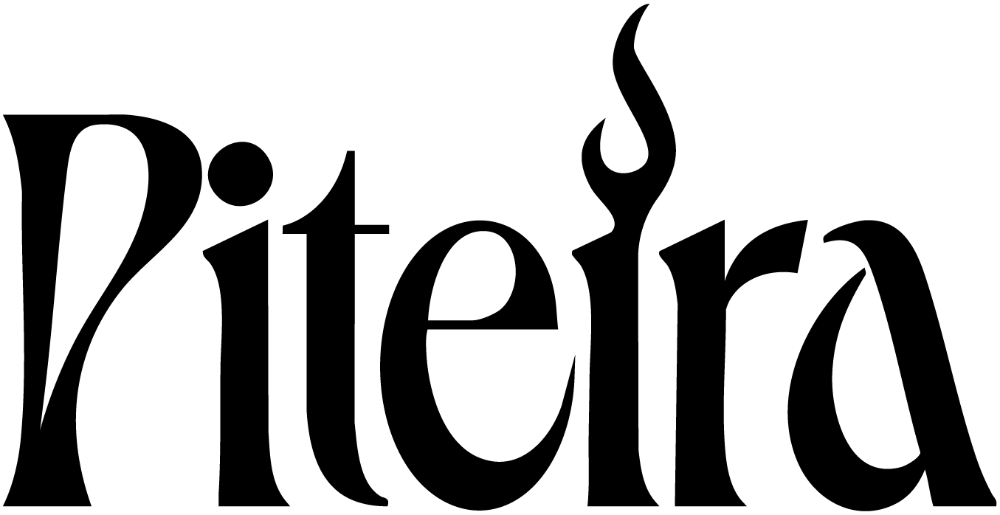
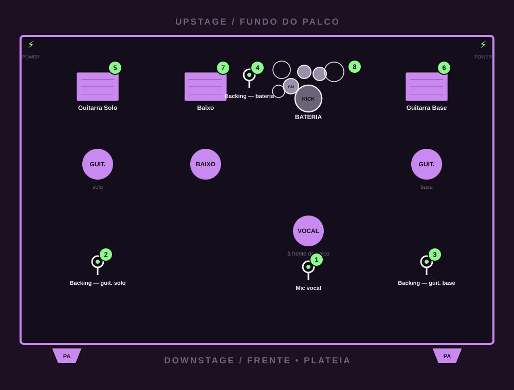

Banda de 5 integrantes (vocal, 2 guitarras, baixo e bateria). Operamos com amplificadores de palco ou em modo compacto (tudo em linha / DI) conforme a estrutura do local.

| # | Fonte | Microfone / captação |
|---|---|---|
| 1 | Vocal (Fernanda) | Mic dinâmico c/ pedestal |
| 2 | Backing — Guitarra Solo (Gabriel) | Mic dinâmico c/ pedestal |
| 3 | Backing — Guitarra Base (Endy) | Mic dinâmico c/ pedestal |
| 4 | Backing — Bateria (Bruna) | Mic dinâmico c/ pedestal |
| 5 | Guitarra Solo | DI e/ou mic no amplificador |
| 6 | Guitarra Base | DI e/ou mic no amplificador |
| 7 | Baixo | DI e/ou saída de linha |
| 8 | Bateria (kit) | Kit de mics (bumbo, caixa, tons, OH) |
⚡ MODO SEM AMPLIFICADOR
Podemos rodar guitarras e baixo direto na mesa (DI), com tudo em linha — ideal para palcos menores ou monitoração via in-ear.